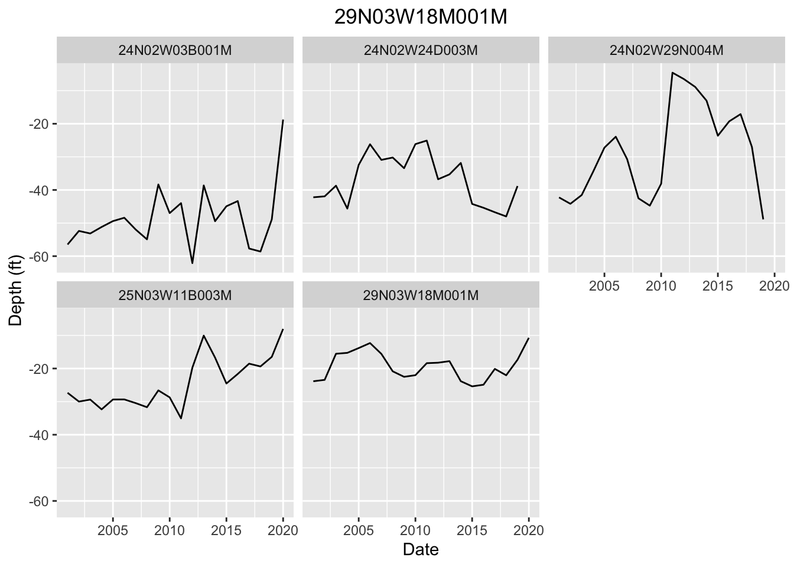

Chapter 5 Analysis
This chapter will clean the data further and perform interpolation on each well from the chosen set. First, the Extreme Learning Machine method, described in Chapter 3, will be used to impute missing values. A spatial interpolation method, Inverse Distance Weighting (IDW) will then be used for comparison purposes. Finally, the accuracy of each method will be analyzed and compared.
In order to determine accuracy, three years (2012-2015) of data will be imputed by each method. Then, the imputed data will be compared to the observed data.
5.1 Extreme Learning Machine
As described previously, the ELM method forms a relationship between input data sources (in our case, remotely sensed earth observation data) and observed data. This relationship is then used to impute data for time periods without measurements.
First, we will need to create a time series data frame that contains all the measurements from each well. We will summarize the data by year to simplify things.
load("code/master.Rda")
master_wells <- read.csv(file = 'code/master_wells.csv')
test_wells <- c('25N03W11B003M',
'29N03W18M001M',
'24N02W29N004M',
'24N02W24D003M',
'24N02W03B001M')
test_wells <- subset(master_wells, mergeOn %in% test_wells)
test_ts_yr <- data.frame(c())
for (well in test_wells$mergeOn){
ts <- filter(master, mergeOn == well)
yr_ts <- ts %>%
mutate(date = lubridate::floor_date(date, "1 year"), mergeOn = mergeOn) %>%
group_by(date, mergeOn) %>%
summarize(Mean_depth=-1*mean(depth.to.GW..ft.))
test_ts_yr <- as.data.frame(rbind(test_ts_yr, yr_ts))
#assign(paste(well, "_3mon_ts", sep = ""), mon_ts)
}We can also create a facet-wrapped group of time series graphs for each well.
# Now let's create time series graphs of these yearly means
test_ts_yr %>%
ggplot(aes(x = date, y = Mean_depth)) +
geom_line() +
xlab("Date") +
ylab("Depth (ft)") +
ggtitle(well) +
theme(plot.title = element_text(hjust = 0.5)) +
facet_wrap(~mergeOn)
5.2 Inverse Distance Weighting
Inverse Distance Weighting (IDW) is a spatial interpolation method that uses nearby observations to interpolate an unknown value at a location. IDW places more weight on observed values that are closer to the point in question. It is a fairly simple method of interpolation, and can be implemented in R fairly easily, as will be shown.
First, a year column will be added to the time series data frame created in the last section. As stated above, we will interpolate over 2012-2015.
library(gstat)
library(sp)
#Create a year column from the date in the test_ts_yr data frame.
test_ts_yr[,"year"] <- format(test_ts_yr[,"date"], "%Y")
#Initialize the years for interpolation and a dataframe to store the values
yrs <- c(2012:2015)
interp_values <- as.data.frame(c())Next, we will loop through each well and each year and perform the IDW interpolation. We will use the idw function to do this.
for (well in test_wells$mergeOn){
for (yr in yrs){
lat <- filter(test_wells, mergeOn != well)$lat
long <- filter(test_wells, mergeOn != well)$lon
depth <- test_ts_yr %>%
filter(mergeOn != well) %>%
filter(year == yr) %>%
select(Mean_depth) %>%
as.list()
sample <- data.frame(lat, long, depth)
coordinates(sample) = ~long+lat
proj4string(sample) <- CRS("+proj=longlat +datum=WGS84")
loc <- data.frame(
long = filter(test_wells, mergeOn == well)$lon,
lat = filter(test_wells, mergeOn == well)$lat)
coordinates(loc) <- ~ long + lat
proj4string(loc) <- CRS("+proj=longlat +datum=WGS84")
new <- idw(formula=Mean_depth ~ 1, locations = sample, newdata = loc, idp = 2.0)
interp_values <- rbind(interp_values, c(well, yr, new@data$var1.pred))
}
}## [inverse distance weighted interpolation]
## [inverse distance weighted interpolation]
## [inverse distance weighted interpolation]
## [inverse distance weighted interpolation]
## [inverse distance weighted interpolation]
## [inverse distance weighted interpolation]
## [inverse distance weighted interpolation]
## [inverse distance weighted interpolation]
## [inverse distance weighted interpolation]
## [inverse distance weighted interpolation]
## [inverse distance weighted interpolation]
## [inverse distance weighted interpolation]
## [inverse distance weighted interpolation]
## [inverse distance weighted interpolation]
## [inverse distance weighted interpolation]
## [inverse distance weighted interpolation]
## [inverse distance weighted interpolation]
## [inverse distance weighted interpolation]
## [inverse distance weighted interpolation]
## [inverse distance weighted interpolation]As you can see, I have not finished this project. However, you can probably guess the ending: I compare the errors from both methods and make conclusions about how effective IDW is. Any feedback you have is appreciated.